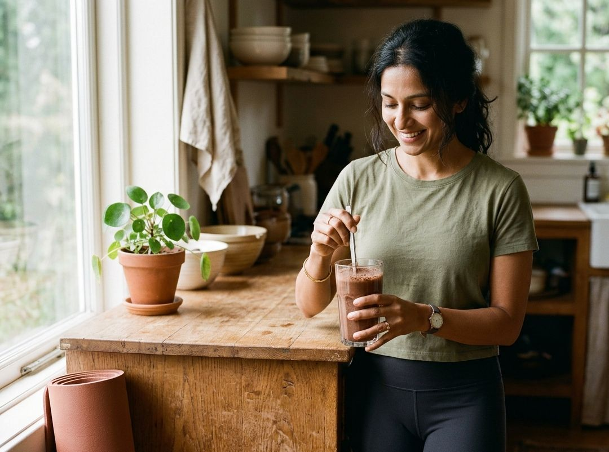
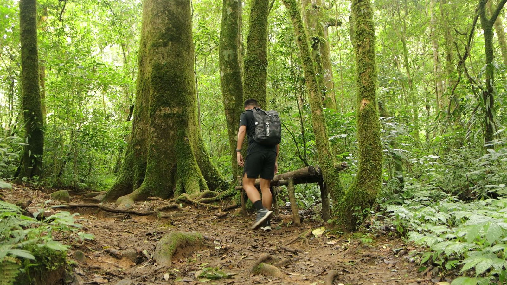
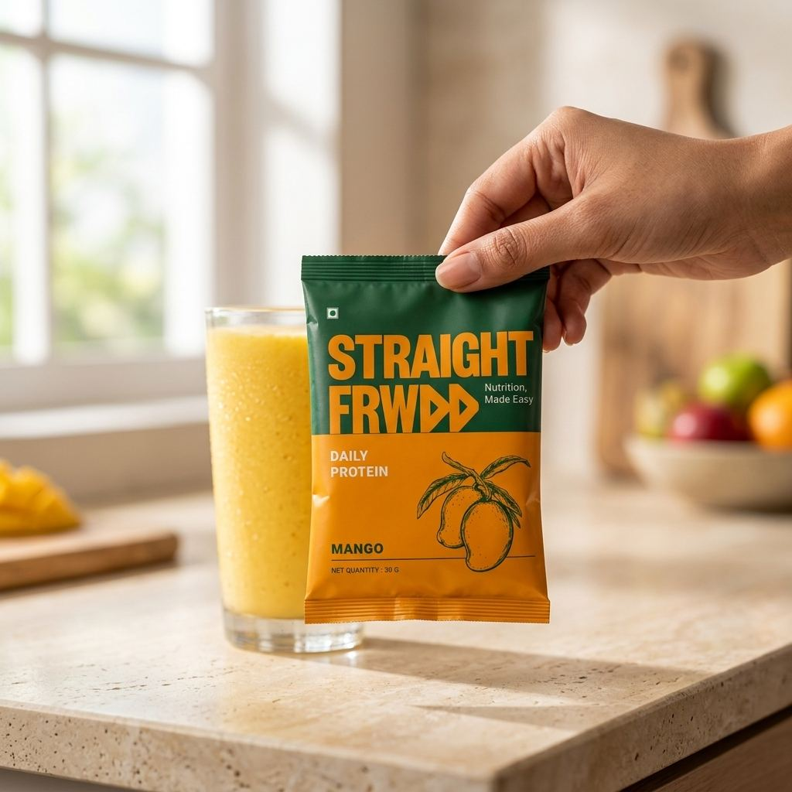

Nutrition,
made easy.
Looking after your health, and the health of the people you love, should not feel like a second job.
Why we made it.
Even in homes where meals are cooked fresh and plates are full, a gap goes unnoticed. Most Indian diets fall short on daily protein.
Turn to the supplement aisle and you meet intimidating tubs, chemical jargon, and a nagging question about what you can actually trust. We created StraightFrwd to replace that noise with calm, everyday certainty.

StraightFrwd is the first time that expertise comes straight to you and your family.
Who it is for.
People who think in decades, not crash diets.
The best nutrition is not the most complicated formula on the shelf. It is the habit you actually keep. When looking after yourself is easy, it stops being a chore and becomes part of how you live.
Nature and science.
Plant protein from soya, pea and brown rice, with fibre, vitamins, minerals and digestive enzymes. Every one named on the pack.
Everyday ease.
A pre-measured sachet, plain water and a spoon. No blender, no kitchen scale, no routine to learn.
The long game.
Health is built in the small choices you repeat every day, with no added sugar and a label you can read in full.



Feel one thing.Relaxed.
Relaxed because you know what goes into your body, and because closing your family's daily protein gap takes less time than making chai.
See Our Products